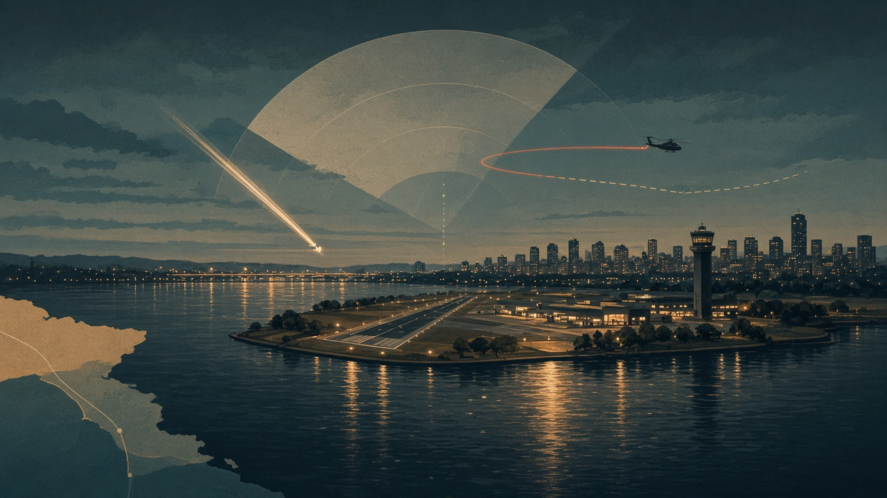
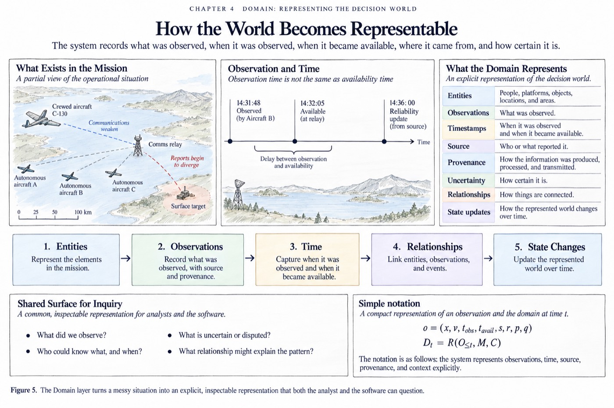
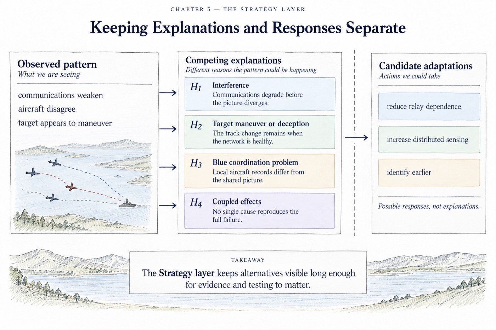
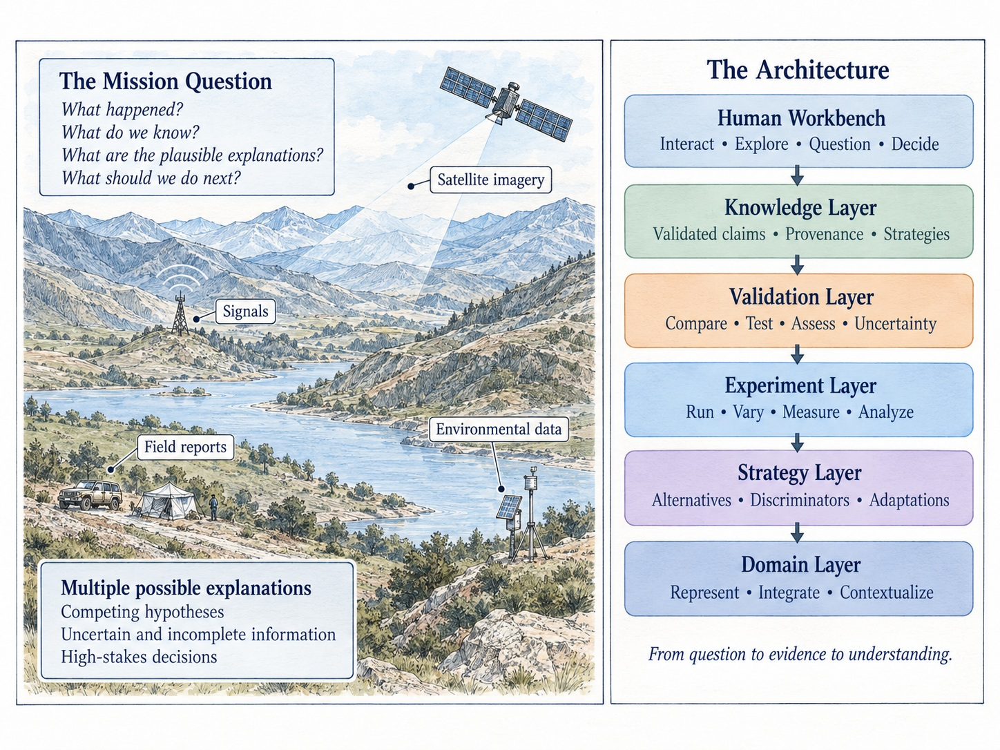

Case study · DCA
Night Crossing
A tightly timed operation in which no single person holds the whole picture.

Night Crossing is used as a problem of distributed decision-making. Information sits across pilots, controllers, procedures, communications, displays, aircraft, and organizational expectations. This account follows that methodological case. It is not a reconstruction of what each person knew, and it is not a finding about cause.
What makes the case hard


A later analyst can see trajectories, timings, and records that no participant had at the moment. A valid analysis refuses that advantage. Each modeled actor receives only the observations, communications, procedures, and expectations plausibly available then.
The question is how local pictures became coordinated, or failed to, across roles and technologies. A controller’s workload, a pilot’s visual picture, a procedure’s assumptions, and the geometry of the airspace can interact while no one possesses the complete state.
How the inquiry is supposed to work

- Several partial worlds Understanding here is a reconstruction of those partial views, not a single narrative written after the fact.
- Tests, not hindsight Analysis asks how a change in communication, procedure, geometry, timing, or authority might alter the interaction. A counterfactual is a constrained experiment. It is not a claim about what certainly would have happened.
- Micro and meso together Individual cognition matters. So do routines, role structures, communication channels, and shared expectations. The decision system exists across them.
The same standard appears in Thinking Together: keep the evidence someone actually had separate from what a later observer can assemble, and do not promote a precise story into a settled cause. The market laboratory asks a related question under different conditions: what can be identified when the available information changes, and what remains indistinguishable.